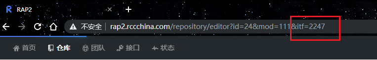

在日常工作中时常需要供调试或测试的数据，那么我们可以通过在系统中执行业务流、多个接口的相互流转或在表中直接插入数据等方式来实现。 但公司业务较为复杂，手工创建数据又非常的耗时，如果通过SQL创建数据，也只能用于流程相对简单的业务。
为了简化创建数据的复杂性，在这个系统中采用了【接口流转+执行SQL语句】的方式。 同时，为了节约用户的每次需要输入接口和传递的参数，该系统可直接获取RAP2文档中开发提供的接口路径、请求参数以及参数规则。
本系统可以添加项目、数据库、RAP接口地址等信息，用户可以通过已添加的信息，进行创建数据的流程的整合，也可以通过SQL语句对已生成的数据进行二次修改。
本系统以后可以接入或发展成接口自动化平台，测试人员只需要校验测试结果即可。 从而统一公司的接口自动化方式，也可极大简化测试人员的接口测试的投入。
在数据库配置模块中，你可以添加、删除、搜索数据库信息。 目前支持的有Oracle、MySQL、PostgreSQL这三种数据库，系统可以根据添加的数据库信息（数据库地址、端口、数据库名称、用户名、密码）链接数据库，为后续执行SQL语句作准备。
在项目配置模块中，你可以添加、删除、搜索项目信息。 项目可以关联上在数据库配置模块存在的数据库；后面的流程可以获取在这里已添加项目的接口域名，从而拼接上RAP2中的接口路径。
在项目配置模块中，你可以添加、删除、搜索接口信息。 在这里你仅仅需要添加RAP2中的"itf"，即可获取接口的全部信息（包括接口路径、请求方式、传递参数格式以及参数生成规则等），关联上对应的项目后，就可得到完整的接口地址。
RAP2+MOCK.JS
http://rap2-api.rccchina.com/app/mock/template/:interfaceId?scope=response|request可以获得请求参数的模版， :interfaceId是接口id，scope选择是response请求还是request请求。
js_function = """ function get_json(json_template){ var Mock = require('mockjs') var data = Mock.mock(json_template) return JSON.parse(JSON.stringify(data)) } """ ctx = execjs.compile(js_function) data_json = ctx.call('get_json', template_response)
python可以通过上述代码就可以根据给出的请求参数的模版和参数规则，自动生成请求参数数据。
1、未捕获异常，系统报错没有提示
2、各个模块没有做修改功能
3、流程模块没有做删除功能
4、接口部分获取用户信息目前是写在代码里面的
5、添加流程不会变更流程的修改时间
6、添加新的流程只能添加在流程的最末尾
7、SQL语句只能在流程的最末尾，因为暂时无法实现SQL语句中的字段值传递
8、仅能生成单条数据
9、项目未有分组功能，有了分组功能后，接口可以关联到组上
10、显示数据结果内容过多
11、已生成的数据目前没有删除功能(数据用完即删)
12、没有日志功能
13、部分项目该系统不支持
......
更多意见请填写至 改进意见